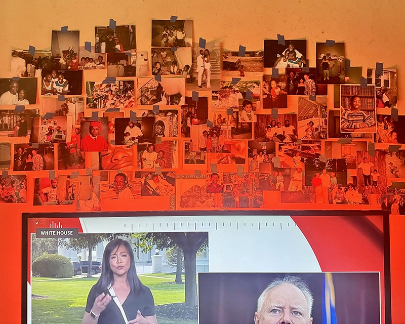

What is it like to be an artist, today?
The purpose of AUSTERITY PARTY PARTY is to create an artist built infrastructure based on reciprocity.
What that looks like as a publishing entity is to create an exchange between works and its audiences that are based on the joy of being seen, sharing, and receiving an art experience. We are inspired by being witness to the transformation of an artists’ practice into books, workshops, programming and exhibitions.
AUSTERITY PARTY PARTY was first conceived between artists Sakura Sky Kelley and Nic Dur inspired by a tradition of queer publishing and was formed together with artist Andre Bradley in 2024 with an expanding interest in amplifying the voices of cultural producers through publishing and curatorial practice. We are based in Joshua Tree, California, Philadelphia, and New York City. What unites us is our interest in photography and books for their radical potential to illuminate and disseminate ideas.
The purpose of this website is to archive and record our flexible, autonomous, collaborative, new style of gathering.
AUSTERITY PARTY PARTY is a celebration of the discipline of art making and the magic chaos of such a life pursuit.
Welcome to the PARTY.
everyone@austeritypartyparty.com /// yes we will get back to you :)